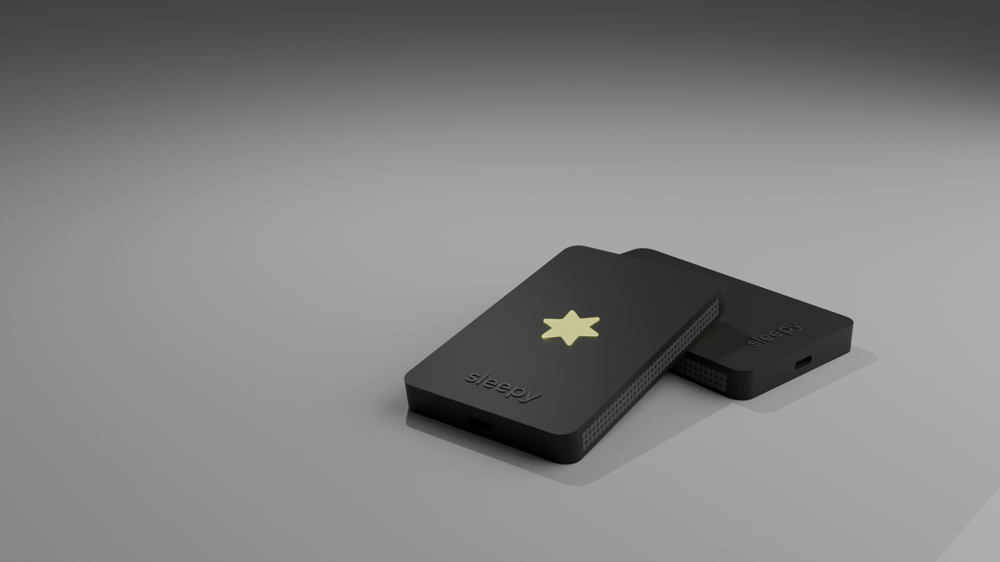
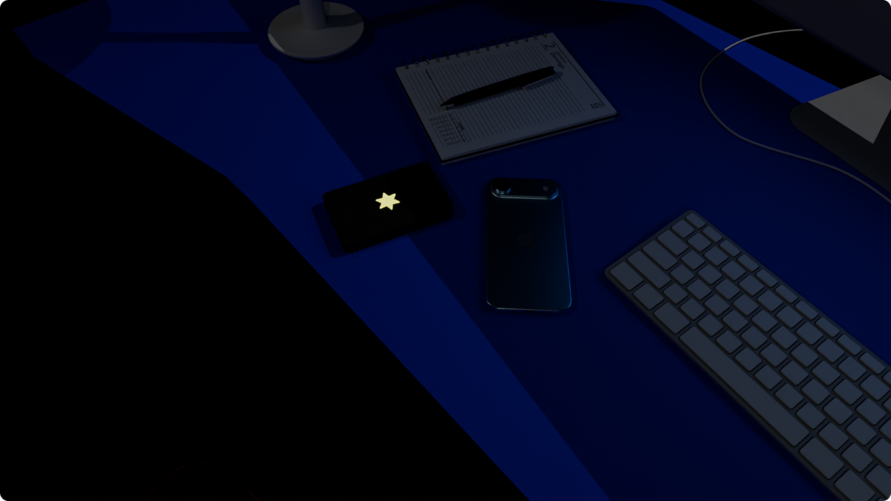
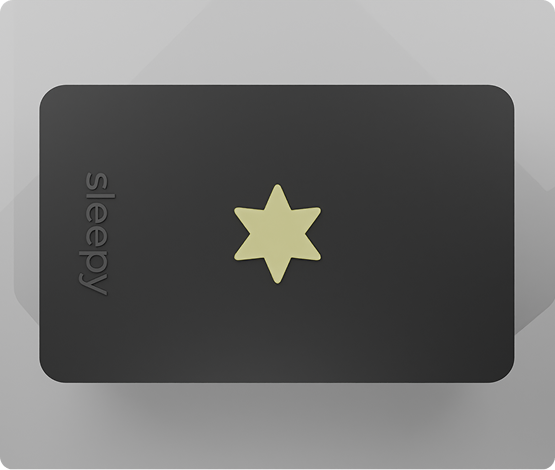
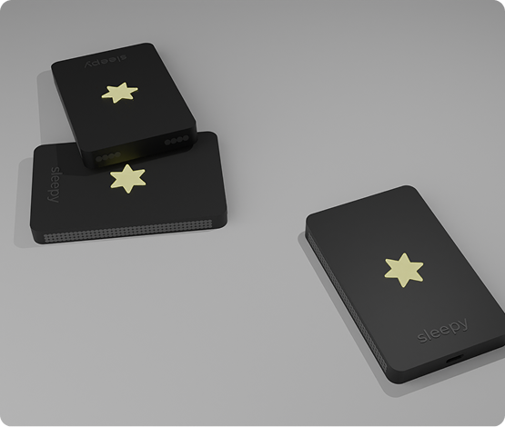
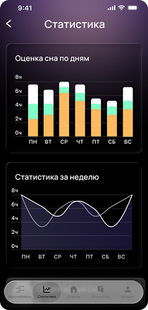
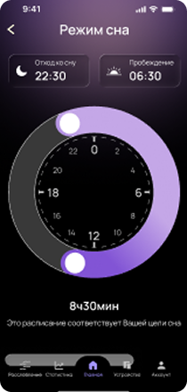

Sleepy — это умное устройство для сна, которое адаптируется к вашему состоянию в реальном времени. Оно отслеживает дыхание и движения, распознаёт этапы подготовки ко сну и мягко помогает организму перейти в состояние отдыха.

Sleepy определяет оптимальный момент для пробуждения в заданном временном интервале и использует плавные сигналы вместо громкого будильника.

Sleepy непрерывно отслеживает изменения дыхания и движений, определяя состояние сна и бодрствования.

Устройство анализирует физиологические сигналы и создаёт мягкие воздействия для расслабления организма.
Устройство не воздействует напрямую на организм, а работает через мягкие сенсорные сигналы.
НАЧАТЬ
